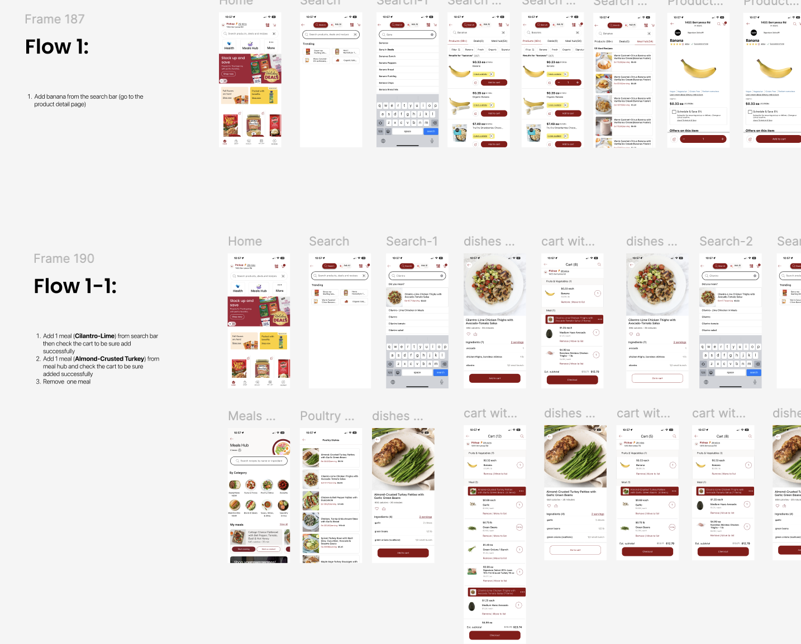

Wearable Driving Assistant Device
Project duration: Present
This study investigates how different wearable vibrotactile devices and takeover request designs influence driver takeover performance and workload in a Level-3 automated driving simulator.
This project started with UX research to identify usability issues in the Safeway mobile app. Based on insights from heuristic evaluation, surveys, and usability testing, we then redesigned key features to improve clarity, efficiency, and overall user experience.

WanderPlan is a travel app that simplifies trip planning with AI itineraries, customization, collaboration, and budget tracking, making travel stress-free and personalized for everyone.

Green Guardian is a plant care app that tracks watering, fertilizing, and pest control. Through user research and testing, I refined it into a high-fidelity, user-centered prototype with AR for quick plant health assessments.

Paws Care is a responsive app and website for pet adoption and fostering. Through this project, I identified user pain points, conducted usability tests, and iterated on the design to create a high-fidelity, user-centered prototype.

TravelWise is a website to help people find tourist attractions and interested fellow travelers, using AI to make travel itinerary suggestions. In this six-person project, I led the front end and UX design, identifying user pain points, creating personas, and defining features. I developed the front end with React, JavaScript, CSS, and Sass.